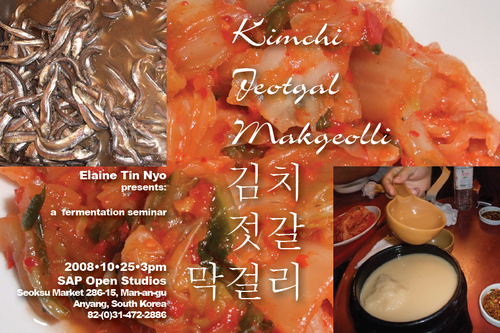

음식에 대한 나의 열정은 SAP 프로젝트에 참여하는 계기가 되었고 이번 프로젝트 기간 동안 나는 한국 요리법에 푹 빠져 지냈다. 재래시장과 백화점의 식품 매장을 여러 군데 돌아다니고, 식당과 가정집에서 소박한 식사부터 고상한 식사까지 두루 체험했다. 이곳에 있으면서 찍은 사진들을 바탕으로 한국의 음식재료에 관한 자료집을 만들고 있다. 이 자료집은 ‘맛과 손길(Taste and Touch)’ 이라는 관람객 참여 웹사이트 (www.touchandtaste.org)에 곧 등재될 것이다. 방문자들은 재료들을 식별하고 요리법을 함께 나누며 웹사이트를 함께 꾸며 나가게 될 것이다. 오픈 스튜디오 기간 동안에 나는 한국에서 발효 음식의 특성을 주제로 한 세미나를 준비할 것이다. 세미나의 요점은 와인과 흡사한 숙성과정을 거치듯 김치, 막걸리, 젓갈 등과 같은 한국의 전통 발효 음식들의 맛을 다루는 것이다. 세미나의 참가자들은 발효 과정을 어떻게 거치냐에 따라 얼마나 한국 음식을 더욱 독특하게 만들어낼 수 있는지에 대해 더 나은 의견을 교환할 수 있다. 세미나의 진행 과정은 비디오로 녹화될 예정이다. 인원수가 제한되므로, 예약은 필수이다.
My passion for food brought me here to Korea for SAP's three month residency program. During my time here I have immersed myself in Korean cuisine. I have shopped in traditional markets and modern department store groceries. I have eaten simple and elaborate meals in restaurants and homes. I am compiling a field guide of Korean ingredients from the photographs I have taken during my time here. This pictorial guide will be published as an interactive website called Taste and Touch (www.touchandtaste.org). Visitors are invited to help me flesh out the website by identifying ingredients and providing recipes. During open studios I will organize a seminar on the nature of fermented food in Korea. The center point of the discussion will be a tasting (similar to a wine tasting) of fermented foods such as kimchi, makgeolli, and jeotgal. The seminar participants will discuss the finer points of how will fermentation makes Korean food unique. The event will be videotaped. The seminar size is extremely limited, reservations are encouraged.
2009-01-08
saptap.egloos.com 에서 옮김